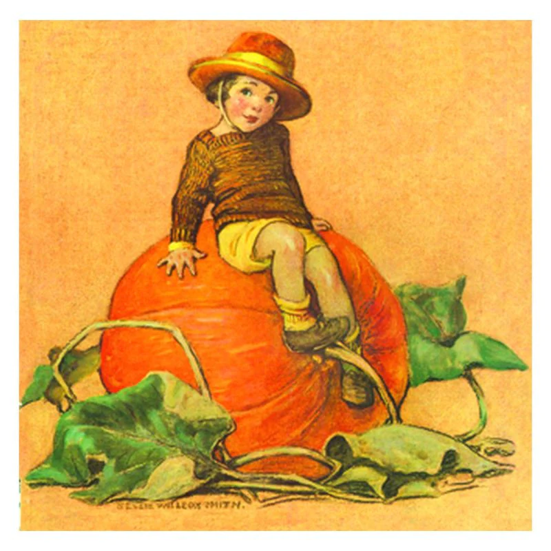
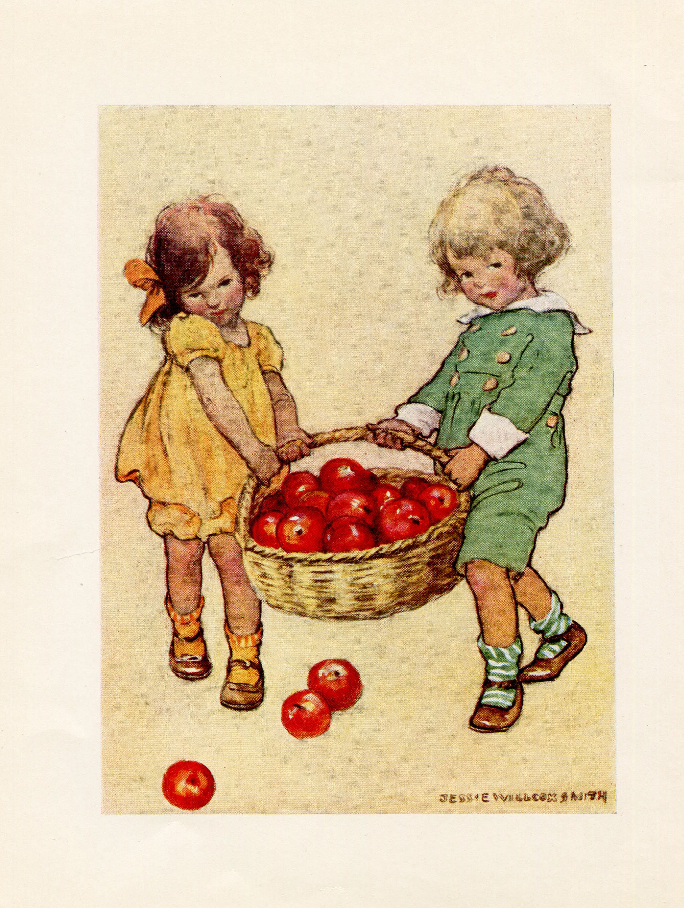
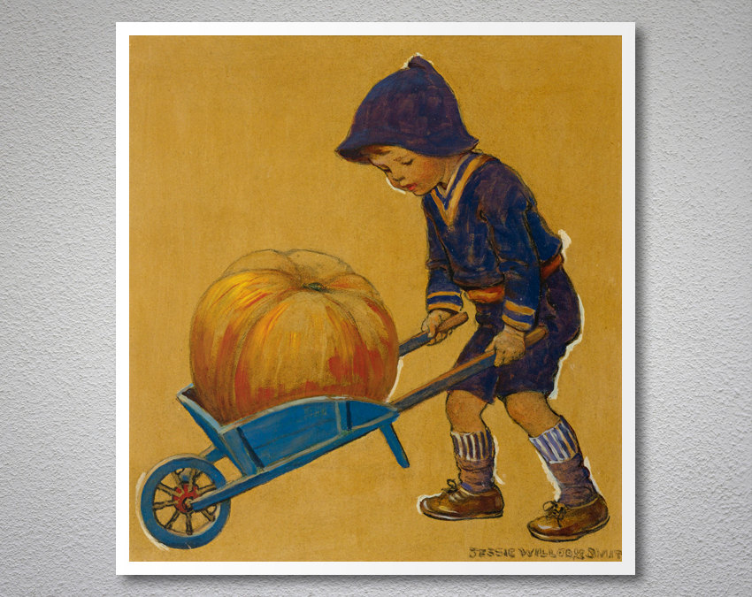
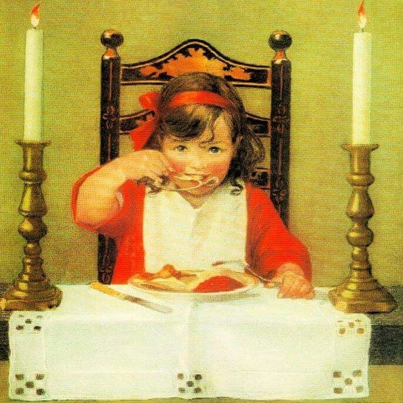

Fall

Want a handy place to plan and track your family read-alouds and traditions?
Get the Christian Read-Aloud Family Calendar!
Click button below to buy.

September
Picture Books to Read Aloud: Stories About Back-to-School, Learning, and Constitution Day
- Love by Corrinne Averiss
- That Book Woman by Heather Henson
- Hidden Figures: The True Story of Four Black Women and the Space Race by Margot Lee Shetterly and Laura Freeman
- A Computer Called Katherine How Katherine Johnson Helped Put America on the Moon by Suzanne Slade
- Counting on Katherine How Katherine Johnson Saved Apollo 13 by Helaine Becker
- The Pink Refrigerator by Tim Egan
- Tomas and the Library Lady by Pat Mora
- Schomburg the Man Who Built a Library by Carole Boston Weatherford
- Railroad Engineer Olive Dennis by Kaye Baillie
- The Day-Glo Brothers by Chris Barton
- Buzzing With Questions the Inquisitive Mind of Charles Henry Turner by Janice N. Harrington
- Clara and the Bookwagon by Nancy Smiler Levinson
- The Oldest Student How Mary Walker Learned to Read by Rita Lorraine Hubbard
- Prairie School by Avi
- The Art Lesson by Tomie dePaola
- Flying High the Story of Gymnastics Champion Simone Biles by Michelle Meadows
- The Gravity Tree the True Story of the Tree That Inspired the World by Anna Crowley Redding
- Shhh! We're Writing the Constitutionby Jean Fritz
- A More Perfect Union: The Story of Our Constitutionby Besty Maestro
- Dear Librarian by Lydia M. Sigwarth
- Six Dots: A Story of Young Louis Braille by Jen Bryant
- Human Computer Mary Jackson Engineer by Andi Diehn
- Fearless Traveler Adventures of Marianne North, Botanical Artist by Laurie Lawlor
- For the Birds: the Life of Roger Tory Peterson by Peggy Thomas
- Malala and the Magic Pencil by Malala Yousafzai
- With Books and Bricks How Booker T. Washington Built a School by Suzanne Slade
- My Great Aunt Arizona by Gloria Houston
- Llama Llama Misses Mama by Anna Dewdney
- Charlie Goes Back to School by Ree Drummond
- How Do Dinosaurs Go to School? by Jane Yolen and Mark Teague
- Morris Goes to School by B. Wiseman
- The Day the Teacher Went Bananas by James Howe
Chapter Books to Read Aloud: Stories About Back-to-School, Learning, and Constitution Day
- Anne of Green Gables series of books by Lucy Maud Montgomery
- Hidden Figures Young Readers' Edition by Margot Lee Shetterly
- Rocket Boys by Homer H. Hickam Jr.
- Our Constitution Rocksby Juliette Turner
- The Constitution Decoded: A Guide to the Document That Shapes Our Nation by Katie Kennedy
- Your Rugged Constitution by Esther Findlay and Blair Findlay. Digital copy is here.
- Gifted Hands: The Ben Carson Story Revised Kids' Edition by Ben Carson
- Carry On Mr. Bowditch by Jean Lee Latham
- Math and Magic in Wonderland by Lilac Mohr
- Little Women by Louisa May Alcott
- Little Men by Louisa May Alcott
- The Boy Who Harnessed the Wind: Young Readers Edition
by William Kamkwamba, Bryan Mealer, et al.
- I Am Malala: How One Girl Stood Up for Education and Changed the World Young Readers Edition
by Malala Yousafzai and Patricia McCormick
- Wonder by R.J. Palacio
- Schooled by Gordon Korman
- Larger-than-Life-Lara by Dandi Daley Mackall
Activities about Back-to-School, Learning, and Constitution Day
- Host a Labor Day barbecue and use these for conversations: Hardworking Conversation Starters
- Go shopping for back to school supplies, donate some to needy children
- Have a feast to celebrate going back to school, share something you learned from last school year and something you hope to learn this year
- Use these at dinnertime Back-to-School Conversation Starters
- Attend or host a community Constitution Day celebration
- Celebrate Constitution Day by watching A More Perfect Union movie
- Watch the Anne of Green Gables movie by Kevin Sullivan
- Watch October Sky movie
- Watch Akeelah and the Bee movie
- For adults: watch the movie Babette's Feast
- Watch Hidden Figures movie
Food from PWCYH (Pioneer Woman Cooks a Year of Holidays) and Other Sources
- Peach Cobbler p. 218 PWYH
- Zucchini Bread found here
- Apple Crisp found here
Books for Parents About Back-to-School, Fostering Learning, and Constitution Day
- The 7 Habits of Highly Effective Families by Stephen R. Covey
- A Thomas Jefferson Education by Oliver DeMille
- Leadership Education: the Phases of Learningby Rachel and Oliver DeMille
- Autodidactic: Self-taught by James W. Parkinson
- Gifted Hands: the Ben Carson Story by Ben Carson
- The Element by Sir Ken Robinson
- The Lifegiving Table by Sally Clarkson
- The Food Nanny Rescues Dinner by Liz Edmunds
- The Lifegiving Parent: Giving Your Child a Life Worth Living for Christby Sally Clarkson
- Miracle at Philadelphia: The Story of the Constitutional Convention, May to September 1787 by Catherine Drinker Bowen
- Promises of the Constitution Yesterday Today Tomorrow by Pamela Romney Openshaw
- We Hold These Truths: A Reverent Review of the U. S. Constitution by Larry P. McDonald
- Original Intent: The Courts, the Constitution, & Religion by David Barton
- Awaking Wonder by Sally Clarkson
- Giving Your Words: The Lifegiving Power of a Verbal Home for Family Faith Formation by Sally Clarkson
- How Children Learn by John Holt
- The September chapter of The Lifegiving Home by Sally Clarkson
Get the Christian Read-Aloud Family Calendar!
Click button below to buy.

October
Picture Books to Read Aloud: Stories About Fall, Harvest, Halloween, and Heroes
- Johnny Appleseed by Reeve Lindbergh
- The Oxcart Man by Barbara Cooney
- The Pumpkin Runner by Marsha Diane Arnold
- The Pumpkin Book by Gail Gibbons
- Sophie's Squash by Pat Zietlow Miller
- Sophie's Squash Go to School by Pat Zietlow Miller
- Hiking Day by Anne Rockwell
- Bear Has a Story to Tell by Phillip C. Stead
- Fall Walk by Virginia Brimhall Snow
- Fletcher and the Falling Leaves by Julia Rawlinson
- Too Many Pumpkins by Linda White
- Tractor Mac Autumn is Here by Billy Steers
- Apples to Oregon by Deborah Hopkinson and Nancy Carpenter
- The Hundred Year Barnby Patricia MacLachlan
- Joshua Little and the Leaves by Andrea Cluff
- Pick a Pumpkin by Patricia Toht
- Autumn Story by Jill Barklem
- The Leaf Thief by Alice Hemming
- Joan of Arc by Diane Stanley
- How Sweet the Sound The Story of Amazing Grace by Carole Boston Weatherford
- Freedom in Congo Square by Carole Boston Weatherfod
- Gordon Parks How the Photographer Captured Black and White America by Carole Boston Weatherford
- The Barber Who Wanted to Pray by R.C. Sproul
- Mother Jones and Her Army of Mill Children by Jonah Winter
- The Tower of Life by Chana Stiefel
- Between the Lines by Andrea Neil Wallace
- Fur, Fins, and Feathers Abraham Dee Bartlett and the Invention of the Modern Zoo by Cassandre Maxwell
- How to Build a Hug: Temple Grandin and Her Amazing Squeeze Machineby Guglielmo and Jacqueline Tourville
- A Home for Mr. Emerson by Barbara Kerley
- The Puffin Keeper by Michael Morpugo
- Brave Jane Austen Reader, Writer, Author, Rebel by Lisa Pliscou
- The Crayon Man the True Story of the Man Who Invented Crayola Crayons by Natascha Biebow
- Independence Cake by Deborah Hopkinson
- Farmer Will Allen and the Growing Table by Jacqueline Briggs Martin
- The Oldest Student How Mary Walker Learned to Read by Rita Lorraine Hubbard
- Fred's Big Feelings the Life and Legacy of Fred Rogers by Laura Renauld
- How Emily Saved the Bridge the Story of Warren Emily Roebling and the Building of the Brooklyn Bridge by Frieda Wishinsky
- With Books and Bricks How Booker T. Washington Built a School by Suzanne Slade
- Voice of Freedom the Story of Fannie Lou Hamer by Carole Boston Weatherford
- Secret of the Sea the Story of Jeanne Power the Revolutionary Marine Scientist by Evan Griffith
Chapter Books to Read Aloud: Stories About Fall, Harvest, Halloween, and Heroes
- Joan of Arc by Michael Morpugo
- Any book from Childhood of Famous Americans Series
- Any book from Christian Heroes Then and Now by Janet and Geoff Benge
- Ten Boys Who Changed the World by Irene Howat
- Ten Girls Who Changed the World by Irene Howat
- Charlie and the Chocolate Factory by Roald Dahl
- The Faithful Spy: Dietrich Bonhoeffer and the Plot to Kill Hitler by John Hendrix
- The Boy Who Harnessed the Wind Young Reader's Edition by William Kamkwamba and Bryan Mealer
- Unbroken (Young Adult Adaptation) by Laura Hillenbrand
- The Vanderbeekers Lost and Found by Karina Yan Glasser
- Father to the Fatherless: The Charles Mulli Story by Paul Young (may have to leave out parts for young children)
- My Journey Of Faith: An Encounter with Christ And how He Used Me to Spread His Love to the Poorby Charles Mulli
Activities: About Fall, Harvest, Halloween, and Heroes
- Have dinner with these Autumn Days Conversation Starters, with one tucked under each person's plate. Take turns reading your question aloud and answering.
- Visit an apple orchard, harvest apples, and make something out of them fresh, like apple crisp, and/or preserve them
- Harvest your garden produce, or buy from local farmers, and preserve it
- For 13+, watch documentaries about Martin Luther
- For 13+, watch Fires of Faith documentary at byutv.org
- Watch Greater movie
- For 13+, watch Joan of Arc movie at byutv.org
- Watch Willy Wonka and the Chocolate Factory movie and discuss why Charlie is a hero
- Rake up and play in piles of leaves
- Perform an act of service by raking your neighbor's leaves and disposing of them
- Have a leaf race in your neighborhood to see who can rake up the most leaves in a certain amount of time.
- Host a "Harvest of Heroes" festival where everyone brings potluck food, an activity or game to share, and dresses up as heroes and you take turns giving clues and guessing who you are
- Host a "Dress Up As Your Favorite Book Character" party, take turns giving clues and guessing who you are
- Go to a farmer's market and buy local food
- Pass out gospel tracts along with edible treats to trick or treaters, found here: Gospel Tracts for Trick-or-Treaters
- Do reverse trick or treating and take treats to your neighbors, perhaps just focusing on the adults with a treat adults would love to receive
- Make a patchwork wreath for your door made out of fabrics in a variety of patterns. Glue the scraps onto a styrofoam wreath and then adorn with fabric flowers, lace, etc. This represents how human lives affect each other, and that all our stories are connected. This is particularly appropriate for All Saint's Day/The Day of the Dead on Nov. 1. See p. 200 of Jerusalem Jackson Greer's book, A Homemade Year: the Blessings of Cooking, Crafting, and Coming Together
Food from PWCYH (Pioneer Woman Cooks a Year of Holidays) and other sources
- Pumpkin sheet cake, not in PWCYH, but here Pioneer Woman Pumpkin Sheet Cake
- Caramel apples p. 230 PWYH
- Popcorn Balls p. 232 PWYH
- Fondu night with melted caramel, cheese and other food, and a variety of food to dip in the fondu (easier than caramel apples)
- Apple cider and donuts
- Chili recipe here, served in a hollowed-out pumpkin
Books for Parents: About Harvest, Halloween, and Heroes
- Renegade: Martin Luther, the Graphic Biography by Dacia Palmerino
- Here I Stand: A Life of Martin Luther by Roland Bainton
- The Hiding Place by Corrie Ten Boom
- Tramp for the Lord by Corrie Ten Boom
- In My Father's House by Corrie Ten Boom
- Henry Wadsworth Longfellow: American Genius by Marian R. Carlson
- A Life Observed: A Spiritual Biography of C. S. Lewis by Devin Brown
- Unbroken: A World War II Story of Survival, Resilience, and Redemption by Laura Hillenbrand
- Joan of Arc by Mark Twain
- Patricia St. John Tells Her Own Story by Patricia St. John
- Mahatma Gandhi Autobiography: The Story Of My Experiments With Truth (The Story of My Experiments with Truth: An Autobiography) by M.K. Gandhi
- The October chapter of The Lifegiving Home by Sally Clarkson
Get the Christian Read-Aloud Family Calendar!
Click button below to buy.

November
Picture Books to Read Aloud: About Veterans' Day, Gratitude and Thanksgiving
- America's White Table by Margot Theis Raven
- The Pilgrims' First Thanksgiving by Anne McGovern
- Three Young Pilgrims by Cheryl Harness
- Squanto and the Miracle of Thanksgivng by Eric Metaxas
- Thank You, Sarah by Laurie Halse Anderson
- Give Thanks to the Lord by Karma Wilson
- Giving Thanks How Thanksgiving Became a National Holiday by Denise Kiernan
- What is Thanksgiving? by Michelle Medlock Adams
- Sarah Gives Thanks by Mike Allegra
- Sharing the Bread by Pat Zietlow Miller
- Thanksgiving in the Woods by Phyllis Alsdurf
- The Boy Who Fell off the Mayflower by P.J. Lynch
- Over the River and Through the Woods ill. by Christopher Manson
- Balloons Over Broadway by Melissa Sweet
- An Old-fashioned Thanksgivingby Louisa May Alcott
- The Thanksgiving Door by Debby Atwell
- Cranberry Thanksgiving by Harry and Wende Devlin
- Samuel Eaton's Day: A Day in the Life of a Pilgrim Boy by Kate Waters
- Sarah Morton's Day: A Day in the Life of a Pilgrim Girl by Kate Waters
Chapter Books to Read Aloud: About Gratitude and Thanksgiving
- The Landing of the Pilgrims by James Daugherty
- We Gather Together: Stories of Thanksgiving from Then to Now by Denise Kiernan
- Stories of the Pilgrims by Margaret Pumphreys
- Molly's Pilgrim by Barbara Cohen
- Pollyanna by Eleanor Porter
- Little Women by Louisa May Alcott
- Little Pilgrim's Progress by Helen L. Taylor (a retelling of Pilgrim's Progress for younger children)
Food
PWCYH (Pioneer Woman Cooks a Year of Holidays)
- Roasted Turkey p. 248 PWYH
- Mashed Potatoes and Gravy p. 254 and p. 251 PWYH
- Stuffing p. 258 PWYH
- Cranberry Sauce p. 256 PWYH
- Dinner Rolls p. 278 PWYH
- Green Beans and Tomatoes p. 270 PWYH
- Roasted Whole Sweet Potatoes or Soul Sweet 'Taters p. 272
- Pecan Pie p. 282 PWYH
- Pumpkin Pie p. 284 PWYH
Activities: About Gratitude and Thanksgiving
- Hang up Thanksgiving-themed banners. Find them free online by doing a search for "free printable Thanksgiving banner". Print on cardstock, color if needed, cut, and tape to string or yarn. If you don't have a printer at home, use a printer at your local public library.
- Count down the days to Thanksgiving Day with these, one a day:
Conversation Starters for Thanksgiving
- Use the above Thanksgiving Conversation Starters by putting one under each person's place at the Thanksgiving Dinner table
- Have a Pilgrim Walk created by Amy at raisingarrows.net over here Pilgrim Walk
- Make a Gratitude Tree out of paper, tape on wall, everyday put on a brightly colored autumn leaf with a blessing written on it
- Count down the days to Thanksgiving with a Thanksgiving Advent Calendar or just use slips of paper in a jar.
- Gather food from neighbors and extended family and donate it to a food pantry
- Help serve Thanksgiving Dinner at a homeless shelter
- Make Thanksgiving Dinner placecards
- Recite the Poem "5 Kernels of Corn" during Thanksgiving Dinner
- Have 5 kernels of corn on each plate before eating. Before serving the meal, each person tells 5 blessings they are thankful for
- Host Thanksgiving Dinner, including more than just your family, inviting people who don't live close to family
- As guests arrive for Thanksgiving Dinner, have each person write down a blessing that person is grateful for. During dinner, read each one aloud and guess who said which blessing.
- Perform a Thanksgiving Play about the Pilgrims and the First Thanksgiving
- Watch Monumental documentary by Kirk Cameron
- Watch the Macy's Thanksgiving Day parade
- Play football on Thanksgiving Day morning
- Host a Thanksgiving Day Devotional or Seder
- Watch A Charlie Brown Thanksgiving
- Watch The Mouse on the Mayflower
- Watch the Disney movie Squanto a Warrior's Tale
- Explore plimoth.org
- Play Thanksgiving Scattergories, such as the one here
- Write thank-you notes and mail them
- Watch the Little Women movie, any or all of the following: the 1933, 1949, 1994, and 2019 versions
- Watch the Pilgrim's Progress animated movie distributed by Fathom Events
- Watch the Disney Pollyanna movie
- Watch A Funny Thing About Love movie, which is a movie about a family during the week of Thanksgiving
- Make a new Christmas ornament with all the guests the afternoon after Thanskgiving Day Dinner, for each one to take home
Books for Parents to Read: About Gratitude and Thanksgiving
- Of Plimoth Plantation by William Bradford
- The Mayflower and the Pilgrims' New World by Nathaniel Philbrick
- Mayflower: Voyage, Community, War by Nathaniel Philbrick
- We Gather Together: A Nation Divided, a President in Turmoil, and a Historic Campaign to Embrace Gratitude and Grace by Denise Kiernan
- BlessBack®: Thank Those Who Shaped Your Life by Julie Saffrin
- 365 Thank Yous: The Year a Simple Act of Daily Gratitude Changed My Life by John Kralik
- Thanks A Thousand: A Gratitude Journey by A.J. Jacobs
- The Little Book of Gratitude: Create a Life of Happiness and Wellbeing by Giving Thanks by Dr. Robert A. Edmonds
- The November chapter of The Lifegiving Home by Sally Clarkson
Ready to go to winter's list? Go here.
Want to go back to the home page? Go here.
Want a handy place to plan and track your family read-alouds and traditions?
Get the Christian Read-Aloud Family Calendar!

Click button below to buy.